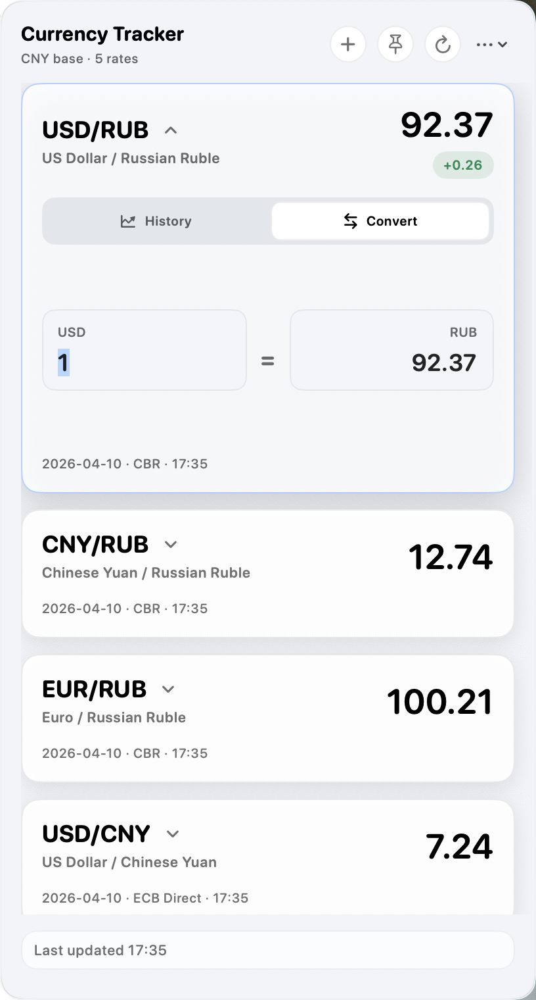
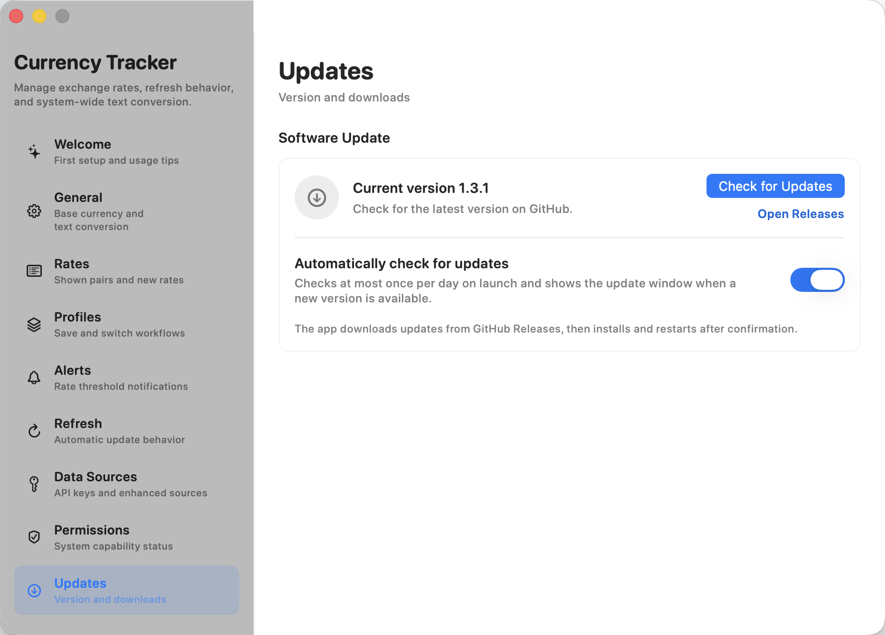
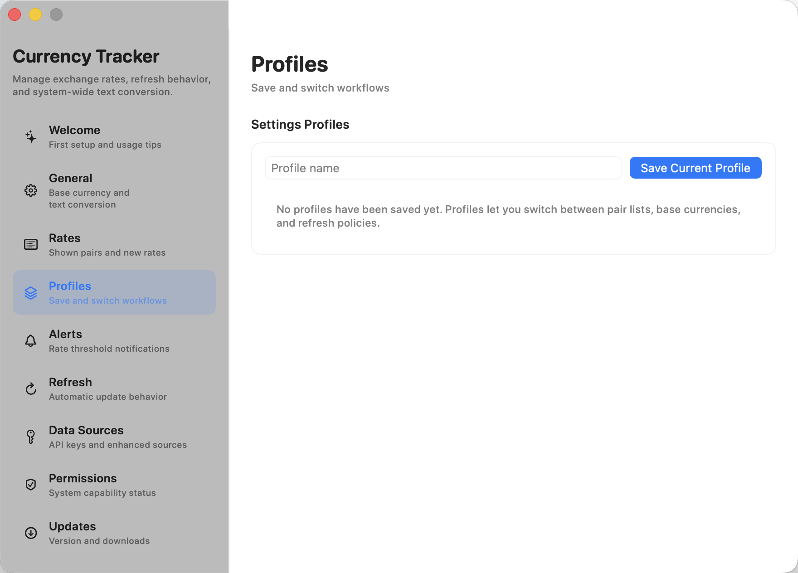

Scan the rates that matter
Keep a curated list of exchange pairs in compact cards with source, refresh time, movement badges, and a native scroll surface for longer lists.
Current release v1.5.4
Currency Tracker turns the macOS menu bar into a focused exchange-rate workspace with live rates, trend charts, conversion, alerts, profiles, and provider controls.
Workflow
The app is designed for repeated checking, not occasional lookup. The default path is fast scanning from the menu bar, with deeper controls only one interaction away.
Keep a curated list of exchange pairs in compact cards with source, refresh time, movement badges, and a native scroll surface for longer lists.
Expand a card into a trend chart with practical ranges from 7 days to 1 year when historical data is available.
Use the inline two-way converter, macOS Services, or a global shortcut to convert selected text from other apps.
Add provider credentials, test custom JSON APIs, set alerts, switch profiles, and manage updates from a dedicated Settings window.
Product surface
Currency Tracker keeps the primary rate list visually dense and predictable. The pinned panel becomes a resizable always-on-top workspace when you need to monitor rates while working elsewhere.
Long rate lists use the macOS overlay scroller outside the card content so spacing stays even.
The menu panel stays attached to the status item, while the pinned panel can be resized independently.
The card itself becomes the chart or converter, keeping the workflow in one place.


Settings
Settings are split into focused sidebar sections for rates, data sources, updates, profiles, alerts, language, permissions, diagnostics, and launch behavior.

Add mainstream API providers from a menu, save credentials locally, and test custom JSON templates before enabling them.

Check GitHub Releases, download packages, verify SHA256 checksums, and install after confirmation.

Save different rate lists and refresh behavior for different contexts, then add threshold alerts for pairs you watch closely.
Data sources
Public sources keep the app usable immediately. When you need broader coverage or reliability, add provider credentials or define a custom JSON endpoint.
Twelve Data offers 800 free API credits per day, which is about 100 full multi-pair refreshes in Currency Tracker.
Open Exchange Rates offers 1,000 free requests per month, making it a practical secondary source for personal workflows.
ExchangeRate-API, Fixer, Currencylayer, and custom JSON APIs can be added when your workflow depends on a specific source.
Privacy and operations
The app is built to be understandable: local preferences, no project backend, visible provider choices, and a release process through GitHub.
Provider keys are stored in the app's local Application Support data rather than the macOS Keychain, avoiding confusing trust prompts for an unsigned open-source utility.
The project does not operate a server for collecting local files, clipboard contents, provider keys, or device data.
Builds are distributed through GitHub Releases. Because the app is not Apple-notarized, macOS may ask for first-launch approval.
Release
Currency display controls, menu-bar converter mode, independent converter currencies, safer decimal input, and settings polish.